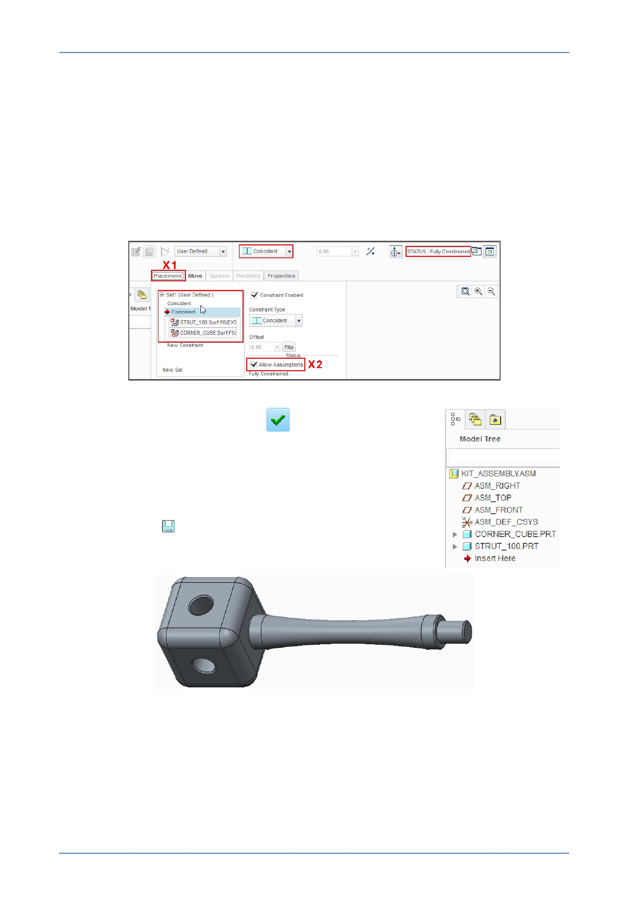

PTC Academic Program
The Assembly dashboard shows the Coincident constraint type was the last used and
that the strut is now Fully Constrained .
Click to open the Placement tab X1 at the left of the dashboard.
Notice in the Placement tab that two Coincident constraints were used to position the
strut.
Typically three constraints are needed to fully constrain a component in an assembly.
However, if two cylindrical surfaces or axis are made Coincident , the Allow
Assumptions option X2 is enabled and when checked/ticked, prevents the component
rotating about the coincident axis.
Click Complete Component
to complete the
component placement.
The strut returns to its original gray color.
Reorienting and saving your work:
Press CTRL + D to reorient the model.
Click Save
to retain the changes in the assembly.
© 2012 PTC
Creo Parametric 2.0 Primer
Page 73